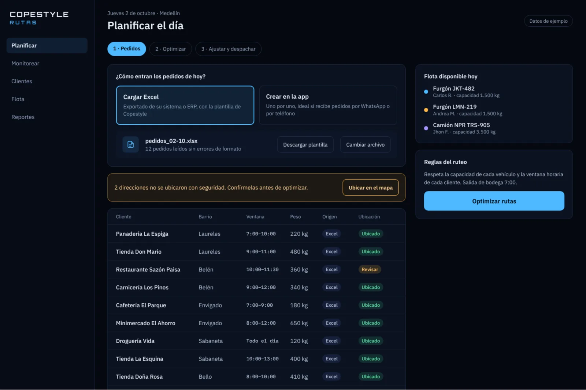
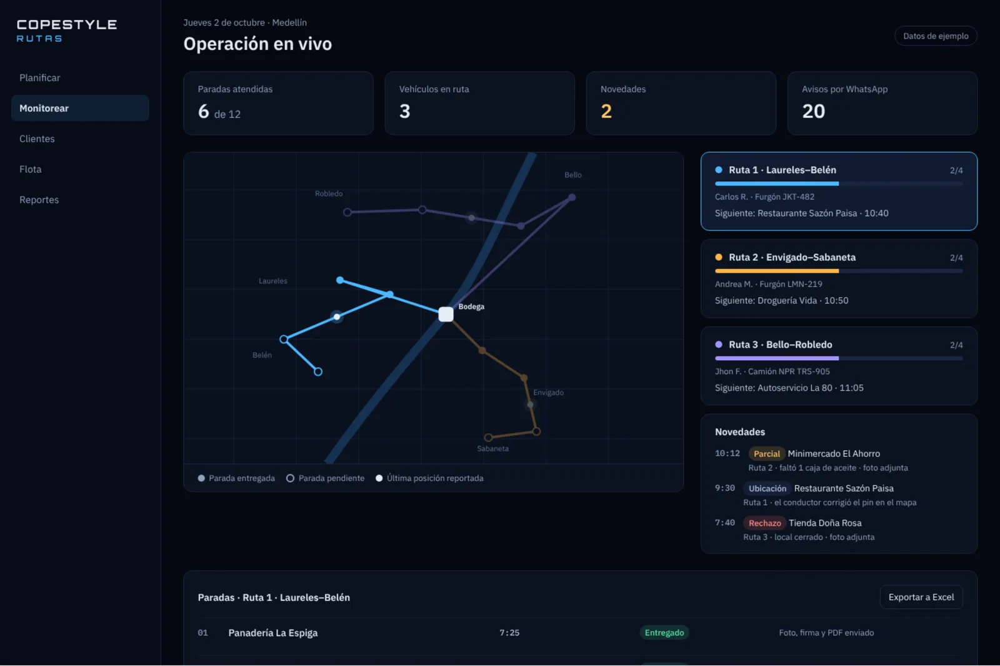
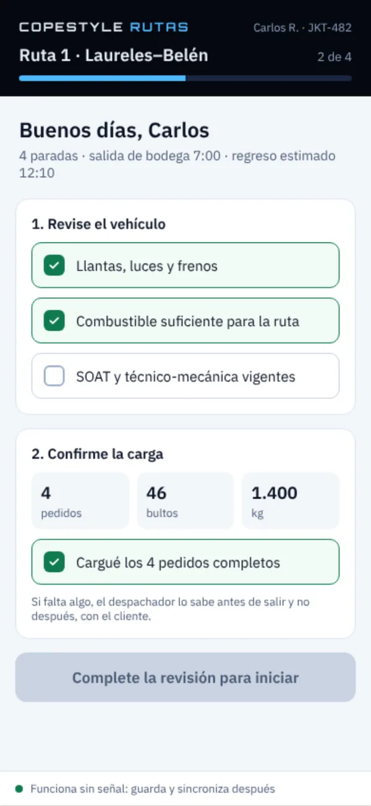
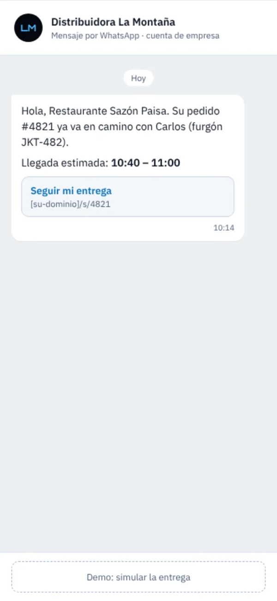

Armar las rutas se come la mañana
Repartir pedidos entre vehículos a ojo, cuadrando pesos y horarios, depende de una sola persona y no deja ver si había una forma mejor.
Carga los pedidos desde Excel, Copestyle Rutas arma las rutas respetando la capacidad de cada vehículo y la ventana horaria de cada cliente, el conductor las sigue desde su celular y tu cliente recibe por WhatsApp a qué hora llega su pedido.

Repartir pedidos entre vehículos a ojo, cuadrando pesos y horarios, depende de una sola persona y no deja ver si había una forma mejor.
El cliente llama, el despachador llama al conductor, el conductor contesta manejando. Nadie tiene la respuesta a la mano.
Un rechazo, un faltante o un local cerrado se conoce cuando el camión vuelve a bodega, sin foto ni soporte para reclamar o reprogramar.
Sube el Excel que exporta tu sistema o ERP con la plantilla de Copestyle, o crea los pedidos uno por uno si te llegan por WhatsApp o por teléfono. Las direcciones dudosas se marcan para confirmarlas antes de rutear.
El sistema reparte las paradas entre tus vehículos respetando la capacidad de cada uno y la ventana horaria de cada cliente, y te muestra rutas, paradas y kilómetros estimados.
Mueve una parada a otra ruta con un toque y las horas se recalculan. Al despachar, cada conductor recibe su ruta y cada cliente su aviso por WhatsApp.
Planifica por la mañana y monitorea durante el día: qué paradas van entregadas, dónde va cada vehículo y qué novedades reportaron los conductores, con foto.


Capturas de la demo con datos de ejemplo.
Usa la plantilla para importar lo que exporta tu ERP, o crea pedidos manuales. El sistema valida el formato y te avisa qué direcciones revisar.
Cada ruta respeta los kilos que carga el vehículo y el horario en que el cliente recibe. Si algo no cabe, aparece como alerta antes de despachar.
Paradas entregadas, siguiente parada de cada conductor y novedades del día (parciales, rechazos, ubicaciones corregidas) con su foto.
Base de clientes con contacto de WhatsApp, ventana de entrega y ubicación. El conductor puede corregir el pin desde la app cuando la dirección no cuadra.
Vehículos, conductores, capacidad y vencimientos de SOAT y técnico-mecánica en un mismo lugar, junto con la carga asignada de hoy.
Entregas completas, parciales, rechazos y entregas dentro de la ventana, por ruta y por motivo. Exportables a Excel.
Llantas, luces, frenos, combustible y documentos vigentes. La ruta no inicia hasta completar la revisión.
Pedidos, bultos y kilos de su ruta. Si falta algo, el despachador lo sabe antes de salir y no después, con el cliente.
En cada parada registra la entrega con foto y firma, o la novedad con su motivo. El comprobante queda en PDF.

Cuando el pedido sale, el cliente recibe un mensaje de WhatsApp con el nombre del conductor, el vehículo y la franja estimada de llegada. Con un enlace ve el estado de su entrega, sin instalar nada.

No. Copestyle Rutas recibe los pedidos con una plantilla de Excel que puedes llenar con lo que ya exporta tu sistema. También puedes crear pedidos directamente en la app.
No. La app del conductor guarda la información si se queda sin señal y la sincroniza cuando vuelve a tener conexión.
No. Reciben el aviso por WhatsApp y siguen su pedido desde un enlace que abre en el navegador del celular.
Sí. La optimización es una propuesta: puedes mover paradas entre rutas antes de despachar y las horas y kilómetros se recalculan. Si no te convence, vuelves a la propuesta original.
Depende del tamaño de tu operación. En la demo revisamos cuántos vehículos y pedidos manejas y te enviamos una propuesta a la medida.
Agenda una demo de 20 minutos. Si quieres, trae un Excel con los pedidos de un día normal y te mostramos cómo quedarían las rutas.